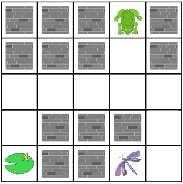

Process
1-Trouver une idée de jeu
2- Choix des designs (perso, labyrinthe)
3- Construction des labyrinthes
4- Programmation de toutes les méthodes


Compétences acquises
1- Construction d'un jeu java de a à z
2- Travail en groupe
3- Gestion d'un projet sur plusieurs semaines